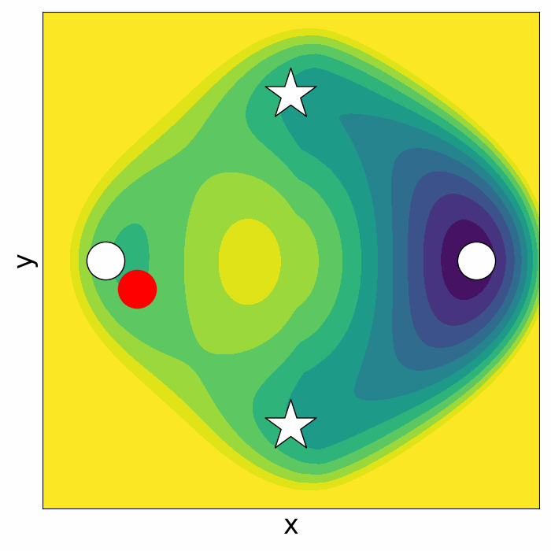
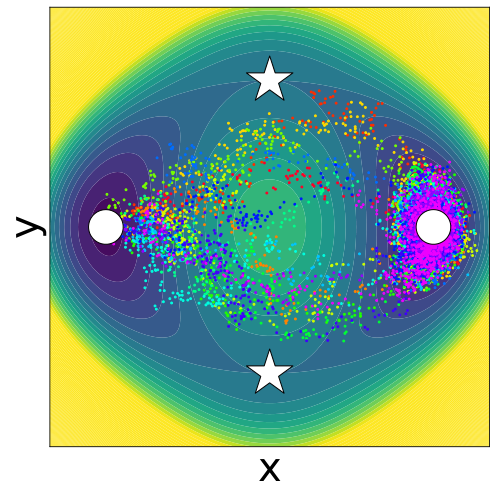
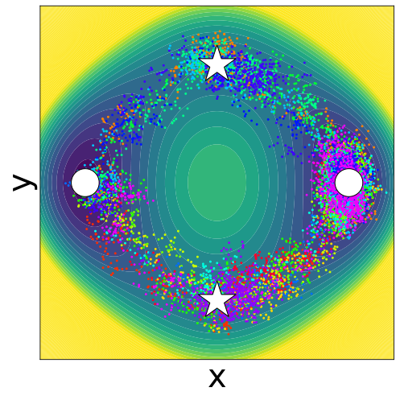
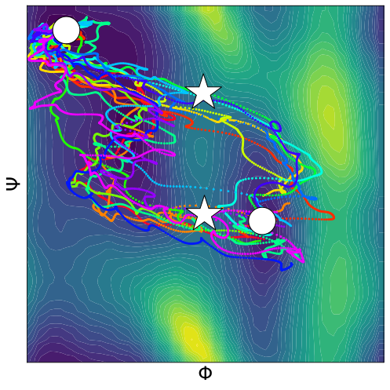
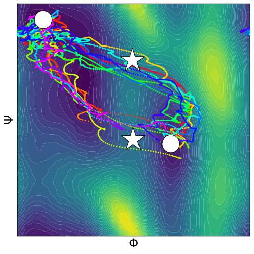
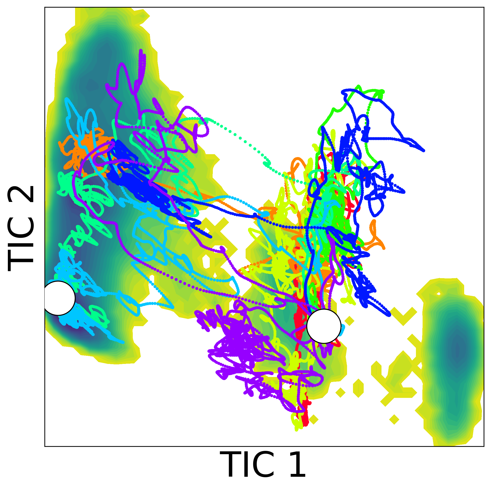
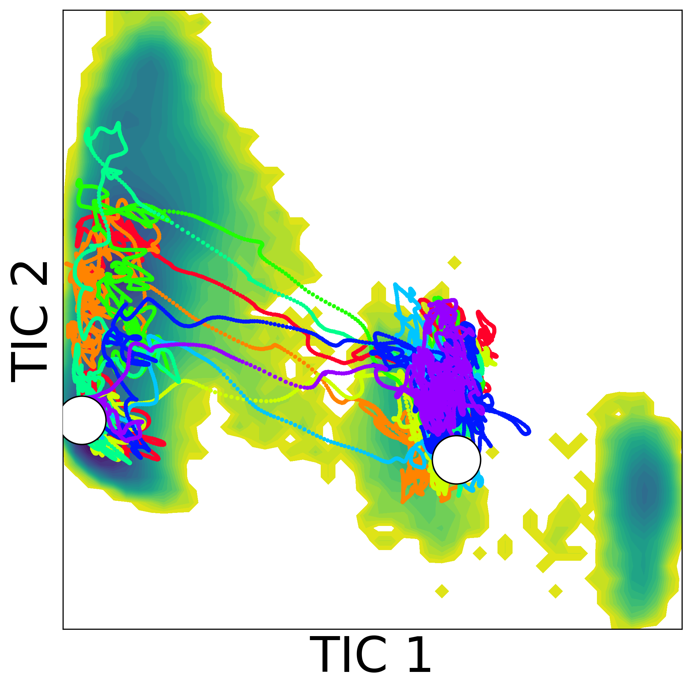

Transition Path Sampling
with Improved Off-Policy Training of Diffusion Path Samplers
TL;DR
We propose TPS-DPS, sampling transition pathways
without the need for collective variables (CVs).
TPS-DPS minimizes the log-variance divergence between
the path measure induced by the model and the target path measure.
We introduce a new off-policy training objective based on learned
control variates and replay buffers.
We introduce a new scale-based equivariant parameterization for bias
force.
Abstract
Understanding transition pathways between metastable states in molecular
systems is crucial to advance material design and drug discovery. However,
unbiased molecular dynamics simulations are computationally infeasible due
to the high energy barriers separating these states. Although recent
machine learning techniques offer potential solutions, they are often
limited to simple systems or rely on collective variables (CVs) derived
from costly domain expertise. In this paper, we introduce a novel approach
that trains diffusion path samplers (DPS) to sample transition pathways
without the need for CVs. We recast the problem as an amortized sampling
of the target path measure, minimizing the log-variance divergence between
the path measure induced by DPS and the target path measure. To ensure
scalability to high-dimensional tasks, we introduce a new off-policy
training objective based on learned control variates and replay buffers,
and a scale-based parameterization of the bias forces. Our approach,
termed TPS-DPS, is evaluated on a synthetic double-well potential and
three proteins: Alanine Dipeptide, Polyproline Helix, and Chignolin.
Results show that our approach produces more realistic and diverse
transition pathways compared to existing CV-free methods.
TPS-DPS on synthetic system
We first evaluate our method on a two-dimensional synthetic system, i.e., a double-well potential at 1200K. This system has two global minima (white circles) representing the meta-stable states, and two reaction pathways via saddle points (white stars). We sample transition paths from the left meta-stable state to the right meta-stable state. Additionally, we plot the potential energy landscape modified by the neural bias potential.
Double-well system
Unbiased MD

TPS-DPS
Transition paths sampled from TPS-DPS on molecular systems.
We also evaluate our method in real-world molecular system with various numbers of amino acids: Alanine Dipeptide, Polyproline Helix, and Chignolin. We compare our method with both classical and ML approaches, assessing the accuracy and diversity of sampled transition paths.
For real-world molecular systems, we present the initial and target state,
and the transition state sampled from TPS-DPS in video.
Spin button: toggles the spin of the molecule.
Run/pause MD button: runs or pauses the molecular dynamics simulation.
Drag (left click): rotates the molecule.
Drag (right click): translates the molecule.
Scroll (up/down): zooms in/out the molecule.
Alanine Dipeptide
Initial state (C5)
Sampled transition (conformation change)
Target state (C7ax)
Polyproline Helix
Initial state (left-handed, PP-II)
Sampled transition (isomerization)
Target state (right-handed, PP-I)
Chignolin
Initial state (unfolded)
Sampled transition (folding)
Target state (folded)
bba
Initial state (unfolded)
Target state (folded)
trp-cage
Initial state (unfolded)
Target state (folded)
Comparsions with baselines
We compared TPS-DPS with both non-ML and ML baselines.
For non-ML baselines, we consider steered MD (SMD) with force constant and collective variables.
For ML baselines, we consider Path Integral SOC for Path Sampling
(PIPS).
Double-well system
Unbiased MD
SMD (0.5)
SMD (1)

TPS-DPS (F)

TPS-DPS (P)
Ground Truth
16 transition path sampled from each method on the potential energy landscape of the double-well system. White circles indicate the meta-stable states, and white stars indicate the saddle points. We sample paths from the left meta-stable state to the right. UMD (λ) denotes unbiased MD with temperature λ and SMD (k) denotes steered MD with the force constant k. The reference temperature is 1200K. (F) and (P) refer to predicting the bias force and potential, respectively.
Alanine Dipeptide
Unbiased MD
SMD (10)
SMD (20)
PIPS (F)
TPS-DPS (F)

TPS-DPS (P)

16 sampled paths from each method on the Ramachandran plot of Alanine Dipeptide. White circles indicate meta-stable states and white stars indicate saddle points. We sample transition paths from the meta-stable state C5 (upper left) to C7ax (lower right). UMD (λ) denotes unbiased MD with temperature λ and SMD (k) denotes steered MD with the force constant k. The reference temperature is 300K for Alanine Dipeptide. (F) and (P) refer to predicting the bias force and potential, respectively.
Chignolin
Unbiased MD
SMD (10K)
SMD (20K)

PIPS (P)
TPS-DPS (P)
TPS-DPS (S)

16 sampled paths from each method projected to the top two TICA components. White circles indicate meta-stable states. We sample transition paths from the unfolded state (right) to the folded state (left). UMD (λ) denotes unbiased MD with temperature λ and SMD (k) denotes steered MD with the force constant k. The reference temperature is 300K for Chignolin. (P) and (S) refer to predicting the bias potential and scale, respectively.
References
This project page has been made using the following libraries and codes.